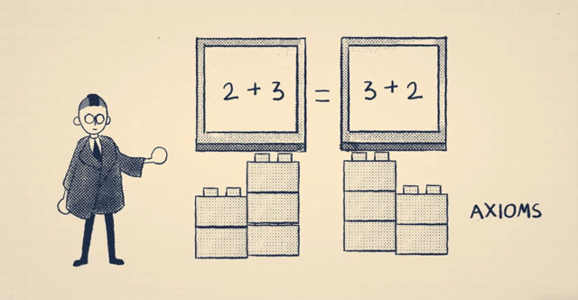

G ̈odel’s first incompleteness theorem states that if there is a consistent mathematical system (i.e., a set of axioms with no contradictions) in which you can do a certain amount of arithmetic, then there are statements in the system that are unprovable using only the given system’s axioms [3]. This theorem emphasizes it is impossible for everything to be proved and if a statement is both true and false it cannot be proved. Thus math is considered incomplete since not all statements could be proven true or false. The simplest proof for the first completeness theorem revolves around the statement, “This statement is unprovable.”
If this statement was proved to be true, it is by definition provable, which would contradict itself. Since the statement itself says that it is unprovable, if it was proven true, that would mean the statement is also both provable and unprovable at the same time. However, it is not possible for a statement to be both provable and unprovable. Therefore this statement can only be unprovable.
G ̈odel’s formal proof from the first incompleteness theorem encompasses the basic idea behind the statement “This statement is unprovable.” In order to increase the precision, all mathematical statements are converted into numerical values. Similar to how computers store text as a combination of 1’s and 0’s, G ̈odel assigns each mathematical symbol a unique number.
Each mathematical statement becomes a list of the numbers assigned to each indi- vidual symbol. In order to encode each mathematical statement, a G ̈odel number is set. A G ̈odel number is the product of the first few prime numbers, each raised to a power based on a symbol’s assigned number. For example, in the statement ”0 = 0”, if 0 was assigned a value of 1 and ”=” was assigned a value of 2 then it would have a G ̈odel number of 90.
2^1 ∗ 3^2 ∗ 5^1 = 90
Thus if G(S) represents the G ̈odel number of a mathematical statement, then the G ̈odel number of 0 = 0 would be represented as
G(0 = 0) = 90
As statements become longer and more complex, the G ̈odel number can increase rapidly in size. However, the size of G ̈odel’s number is not an issue since every number can be divided by a combination of prime numbers in a unique way. If the symbol ”−” were to equal the value of 3, the G ̈odel number 145530 could be split as follows
145530 = 2^1 ∗ 3^3 ∗ 5^1 ∗ 7^2 ∗ 11^1
Thus the G ̈odel number 145530 represents the mathematical statement “0 − 0 = 0”.
G(0 − 0 = 0) = 145530
This method allows any precise mathematical statement to be converted into a numerical value. Proofs are at their core, a series of statements strung together. Even statements about arithmetic formulas can be translated into G ̈odel numbers. Thus, the entirety of mathematics can be translated and rewritten in numerical values.
Converting all proofs into numbers allows for questions and doubts regarding the mathematical statement to be proved using only the numbers and their numerical properties, even if they’re false statements. Or as Ernest Nagel and James Newman, authors of G ̈odel’s Proof said, “typographical properties of long chains of symbols can be talked about in an indirect but perfectly accurate manner by instead talking about the properties of prime factorizations of large integers” [7].
For example, consider the statement U (y). U (y) represents the statement, “if y represents the G ̈odel number of a statement, and there does not exist a number x which is the G ̈odel number of a proof of that statement” [3]. This statement U (y) states that the statement represented by the value of y is not provable but since it has been translated to numbers, the statement is about the relationship between the arithmetical relationship between the said numbers. This arithmetic relationship can be redefined much more easily with an analogous statement such as P (y) which states that “y is a prime number”[3]. P (y) makes a claim about another number but this claim can be solved using arithmetic.
The statement “This statement is unprovable” was the original concept of proof for G ̈odel’s incompleteness theorem and was rather imprecise. In order to make this statement precise, the “diagonal lemma” is used. The diagonal lemma says that “there is some statement S which is true if and only if U (G(S)) is true” [3]. In this case, the diagonal lemma only proves that both S and U (G(S)) are either both true or false. One statement cannot be true with the other being false or vice versa.
However according to the definition of U (G(S)), where G(S) is the G ̈odel number of S, if it is true then that means that S is unprovable. Furthermore, if we can prove that the statement S is true, then the diagonal lemma demonstrates that we can prove that U (G(S)) is also true. But if U (G(S)) is true, by definition it says that S is unprovable. Thus S is a contradiction, it is both provable and unprovable. Therefore S must be unprovable. The statement S is a more precise representation of the earlier statement “This statement is unprovable.” Thus it shows that not every statement can be proved.
